Problem statement At Victoria’s Secret confidence is everything, whether it’s in what you wear or how you shop. Around 62% of customers land on the PDP (product detail page) to evaluate products, and the majority of our PDP traffic flows into the customer review funnel. However, 30% customers drop off due to overwhelming, unstructured, and repetitive customer reviews.
My role
Senior UX designer, generative and evaluative research
Timeline
2 weeks
Team
1 UX, 1 PM, 2 engineers, AI and data science team
Platform
M-web, App, Desktop
Proposed solution
To address this, the goal was to integrate AI-generated review summaries into the Victoria’s Secret shopping experience. This feature delivers a concise, insight-rich paragraph highlighting key product information, helping customers make faster and more confident purchase decisions.
TL;DR
for the curious minds who are interested in conclusion
AI summary on the product page
Before
After
Add to cart rate
4-5% → 13%+
product page visitors adding to cart
Review engagement
30% → 86%
customers engaging with reviews
Our primary target audience was US-based customers 🇺🇸
New Customer
Returning Customers Discovering New Categories
Global Collaboration with Cross-Functional Teams
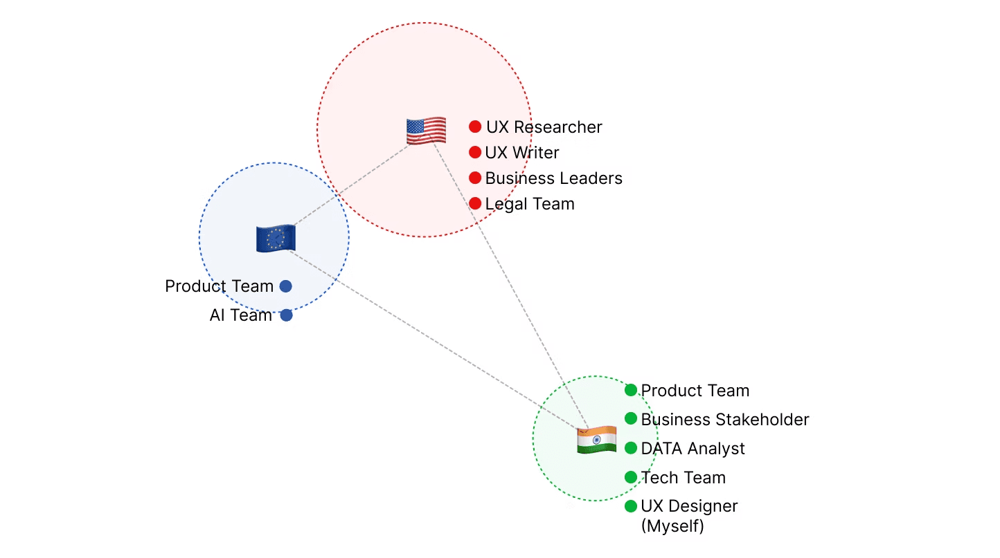
Research
95% of Customers say that reviews matter to them
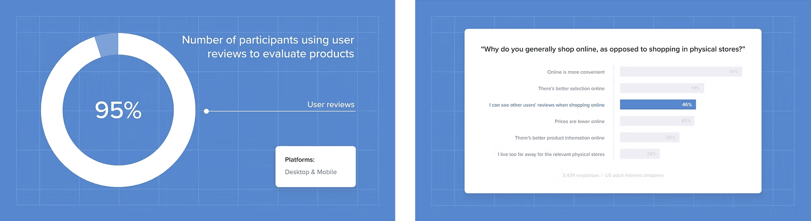
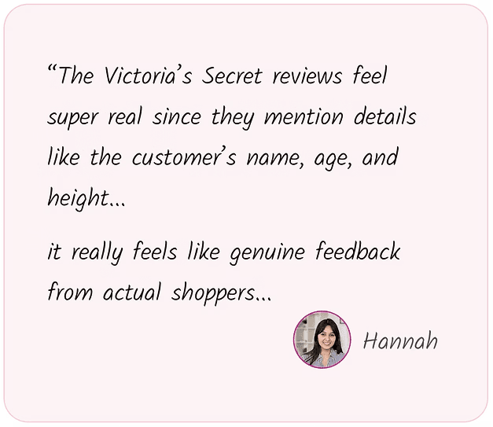
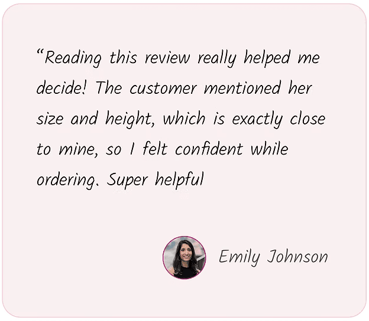
Customer reviews influence 80% of purchase decisions
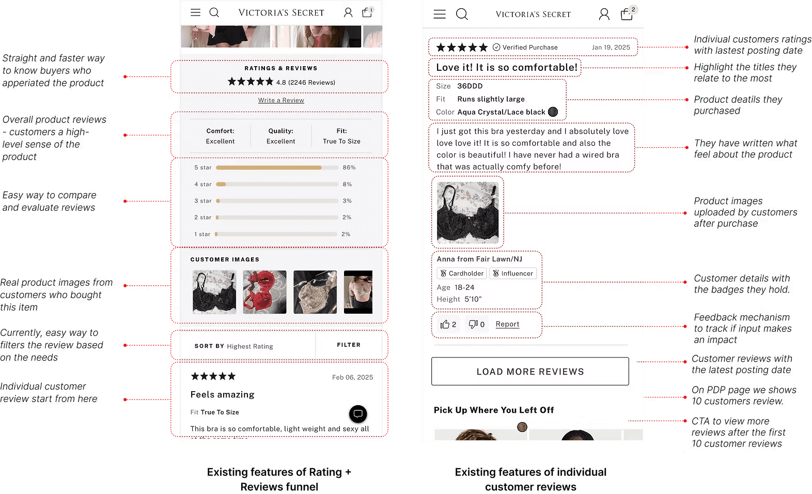
Understanding Customer Pain Points through Data and User Research
High-Demand Categories
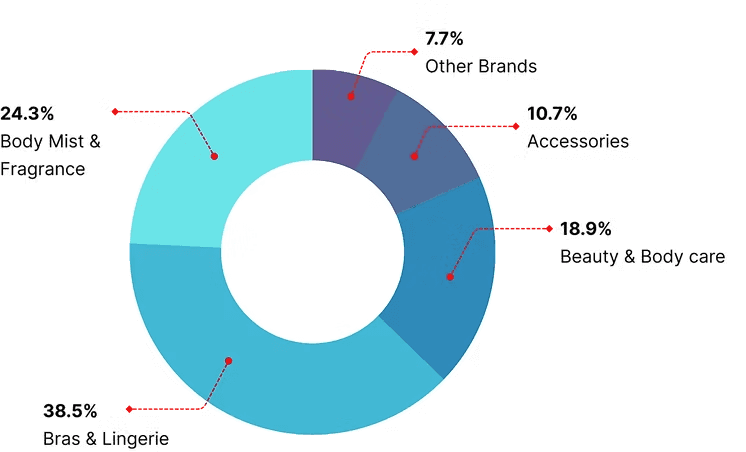
Products with High Customer Ratings
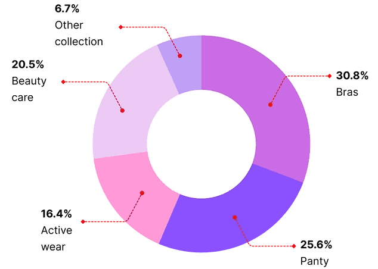
Our Findings from Data
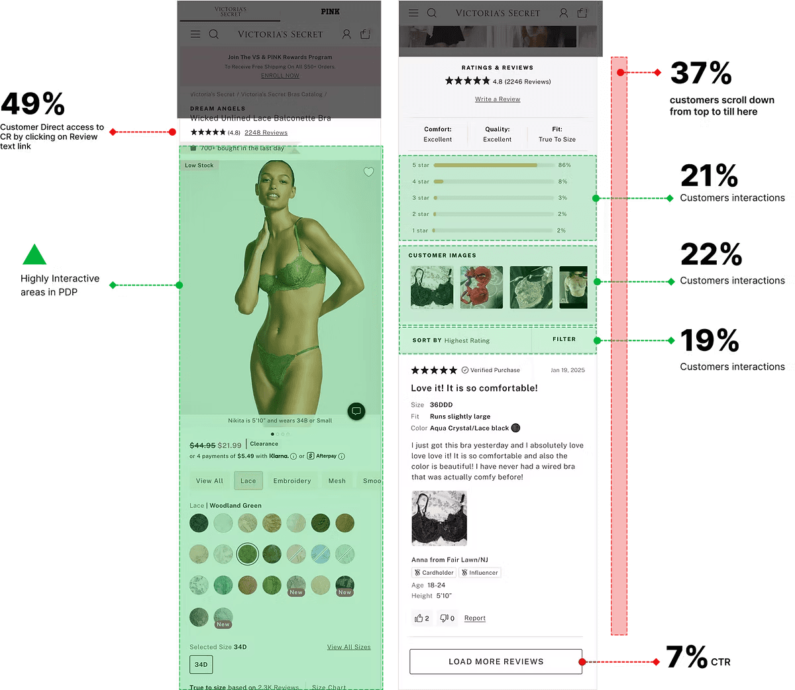
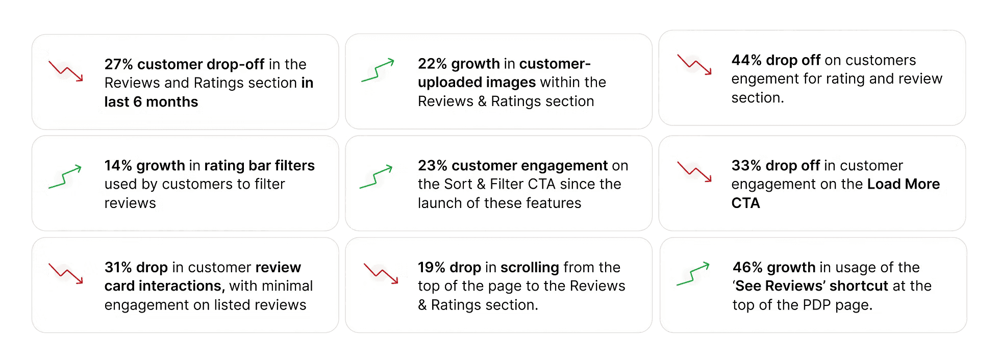
In Our Customers’ Own Words
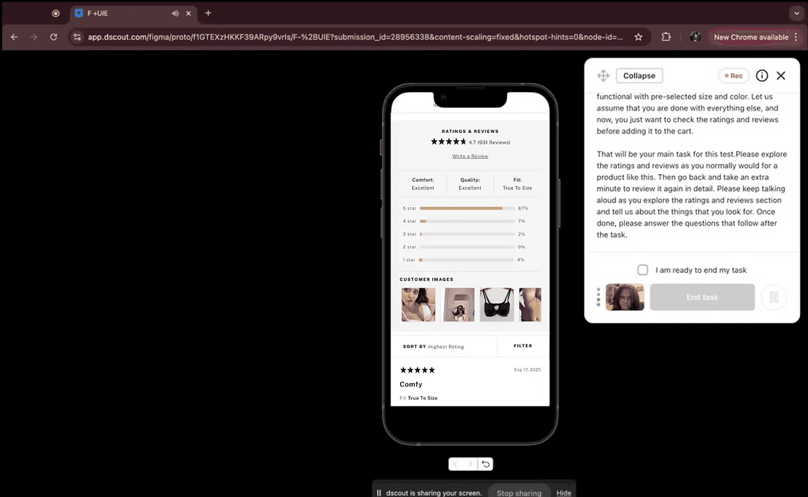
Assigned customers the task of adding a product to cart using reviews to identify challenges in the journey.
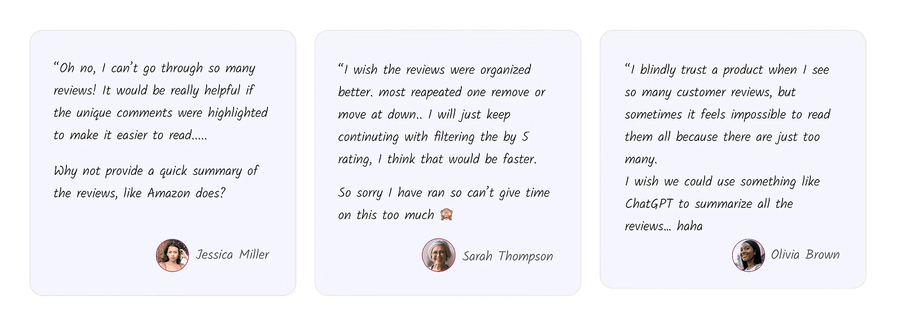
Key insights from customer research
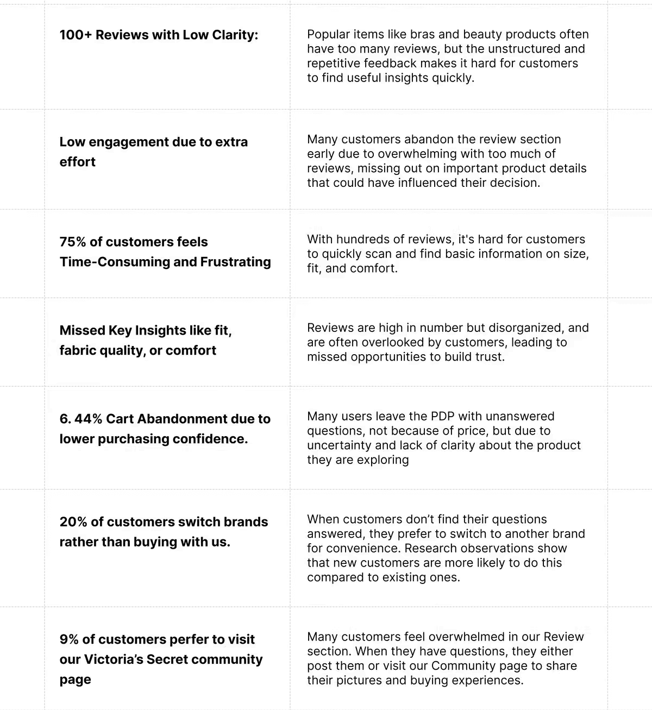
Re-defined Customer Problems
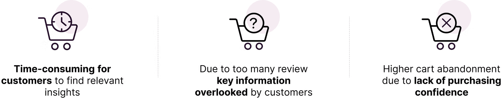
The benefits of solving this customer problem are:
Customer point of view
Business point of view
How others are solving this problem
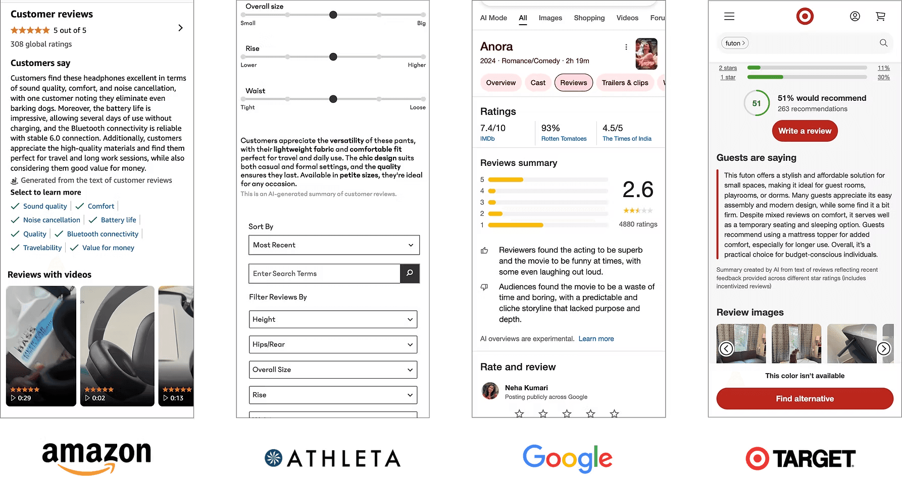
Highlights of AI Summary Features from Our Competitors
Most brands show AI summaries only when a product has 100+ reviews
Summaries are typically placed next to or below the rating distribution.
Usually presented in short paragraph form, covering both positive and negative feedback.
Brands emphasize key recurring keywords/themes to make feedback scannable.
Some brands add recommendation percentages or highlight transparency to build credibility.
Ideating Thoughts & Curiosity
3 Shortlisted Design Concepts
AI-Generated Summary with Key Attributes
Business point of view
Compare with Existing Design
Highlights
Key attributes highlight product features
Includes both positive and negative feedback
Organizes information in a logical flow : title → key attributes → summary paragraph → feedback mechanism, making it easy to consume.